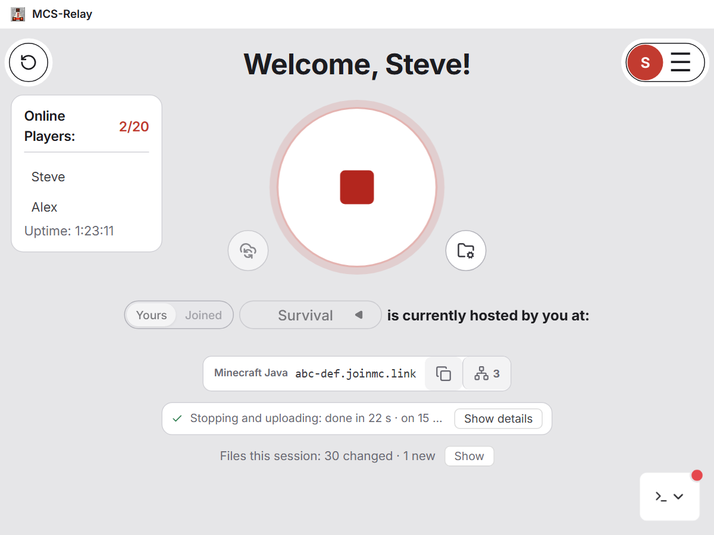
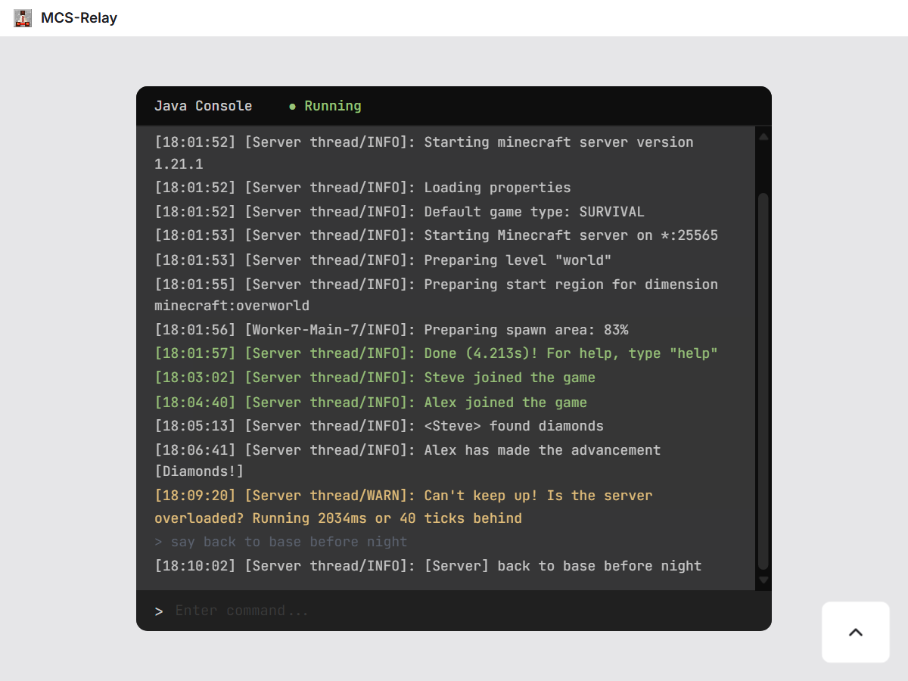
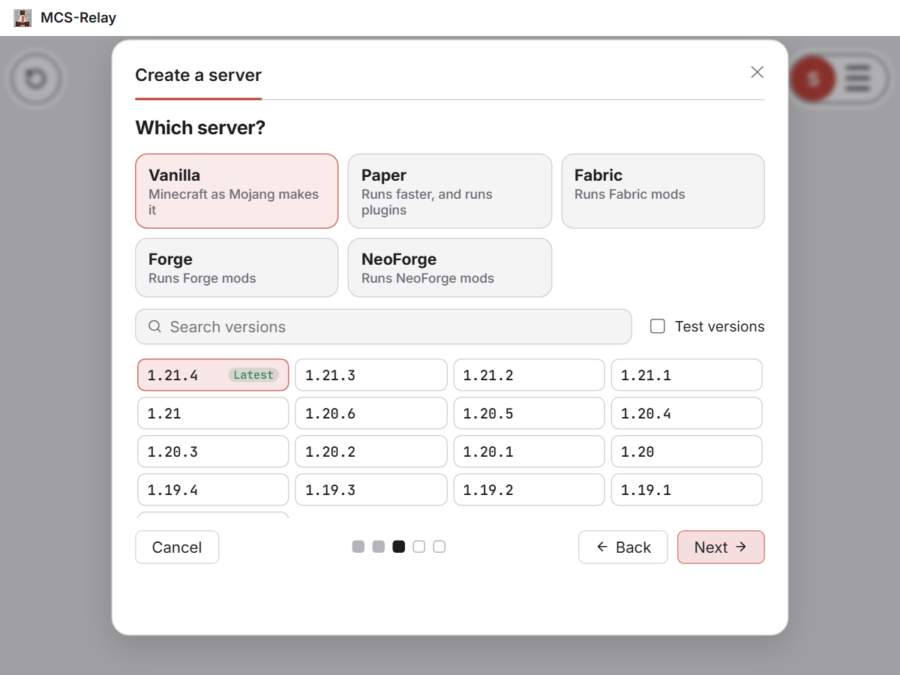
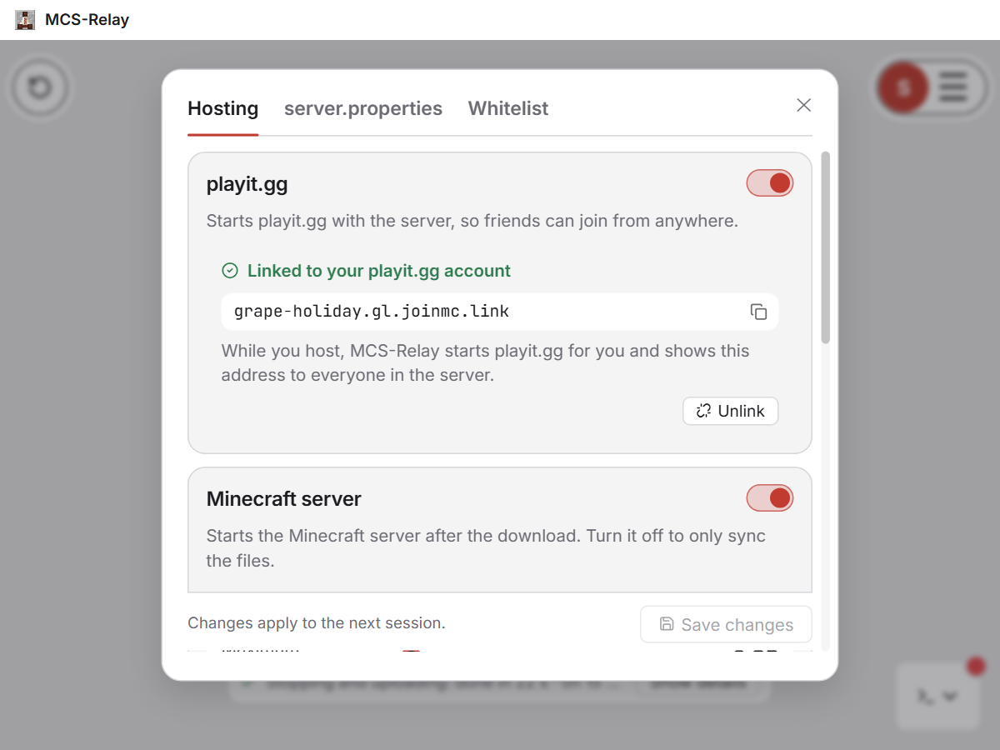
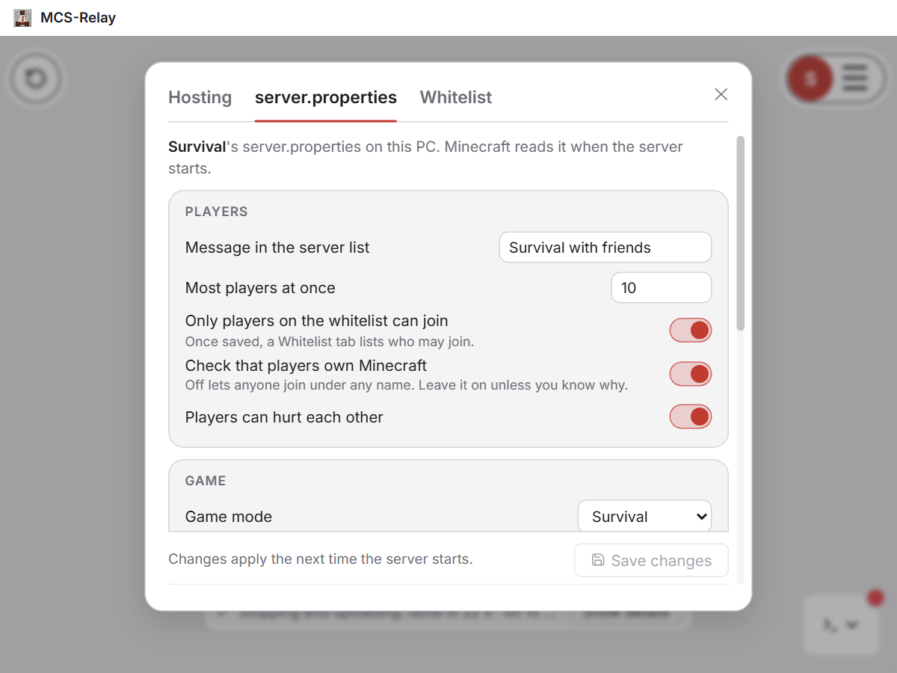

Host your Minecraft server together, from a shared Google Drive
Whoever wants to play hosts it. MCS-Relay downloads the latest world, runs the server on your PC, and saves it back to Google Drive for the next friend. No rented server, no passing files around.
Version 1.1.0 · What's new
Free and open source · Windows 10 and 11 · Updates itself


How it works
Create a server
Name it, and MCS-Relay downloads the server or uses a server folder you already have. Invite your friends; Google Drive emails them a link to join.
Press Start
The newest world is downloaded and the server runs on your PC. It is reserved for you, so nobody else starts it at the same time.
Play
Friends join with the address MCS-Relay shows everyone. With playit.gg linked, they can join from anywhere without port forwarding.
Press Stop
The world is uploaded and the server is free again. Next time, any of you can host it.
Features
A new server in a few steps
Name it, pick vanilla, Paper or Fabric and a version, and MCS-Relay downloads it from the official source (Mojang, PaperMC, FabricMC) and checks it. Or use a server folder you already have, Forge and NeoForge included.
If your PC's Java is too old for the server, MCS-Relay downloads the right one for it (Eclipse Temurin, from Adoptium). Nothing to install by hand.

Friends join from anywhere
Link your free playit.gg account once: you sign in on playit.gg's own page, and MCS-Relay does the rest. It downloads playit.gg, makes your Minecraft tunnel and starts it whenever you host.
Everyone in the server sees the address to join with, whoever hosts. Friends on your own network can also join without it. Phone hotspots often block playit.gg, so host from a normal internet connection.

Server settings in plain words
Change server.properties with switches and boxes: the message in the server list, how many players, game mode, difficulty, view distance and more, and every other line of the file too.
Turn the whitelist on and add your friends by name. Memory, Java and automatic backups are in the same place.

One host at a time
A server is reserved while someone hosts it, so two people never run it at once and overwrite each other's world.
Only changes are sent
After the first upload, a session moves just the files that changed. Uploads can be paused and continued, even after a crash.
No guessing
If your copy and the cloud both changed, MCS-Relay shows you and you choose which to keep.
World backups
Named backups on your PC or in the cloud for everyone, and an automatic one while you host. Restoring backs up the current world first.
Run it your way
Invite and remove members, leave files out of the sync, sync without playing, and use the server console from the app.
Lives in the tray
Notifications and a sound when a start or stop finishes, Light, Mint and Dark themes, and automatic updates.
Your Google data
When you sign in, Google asks you to let MCS-Relay see, edit, create and delete your Google Drive files. The app needs that to read the world files your friends upload: Google's smaller permission only shows an app the files it made itself.
- MCS-Relay only works in the "Minecraft Shared Servers" folder it makes in your Drive and in the servers you join (and in a "MCS-Relay problem reports" folder, if you send a problem report). It does not open, list or change your other files.
- There is no MCS-Relay server: the app talks to Google straight from your PC, and your sign-in is stored encrypted on it.
- Nothing is sold, shared for advertising or collected for statistics.
The privacy policy lists exactly what the app uses and where it is kept. You can take the access back at any time in your Google Account.
Play with people you trust
When you host, the server's files run on your PC: the server .jar, its mods and its plugins are programs. Every member of a server can change those files, and MCS-Relay does not scan them. Someone with bad intentions, or whose account was taken over, could hide harmful software in a server, and it would run on the PC of whoever hosts next.
- Create, join and invite only with people you trust.
- Keep your antivirus on.
- If mods, plugins or programs appear that nobody mentioned, ask before you host.
The app asks you to agree to this in its terms of use before you start.
What you need
- Windows 10 or 11 and a Google account.
- Java, in the version your Minecraft server needs: MCS-Relay can download it for you.
- A Minecraft Java server: MCS-Relay downloads vanilla, Paper or Fabric, or uses a server folder you already have (Forge and NeoForge too). An existing world works too.
- Optional: a free playit.gg account, so friends can join from anywhere. You link it from the app.